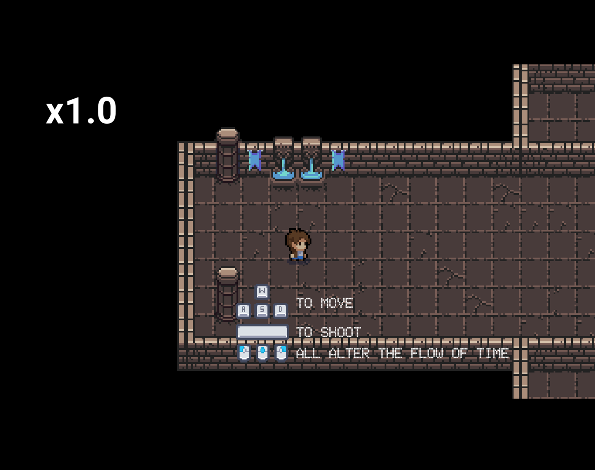
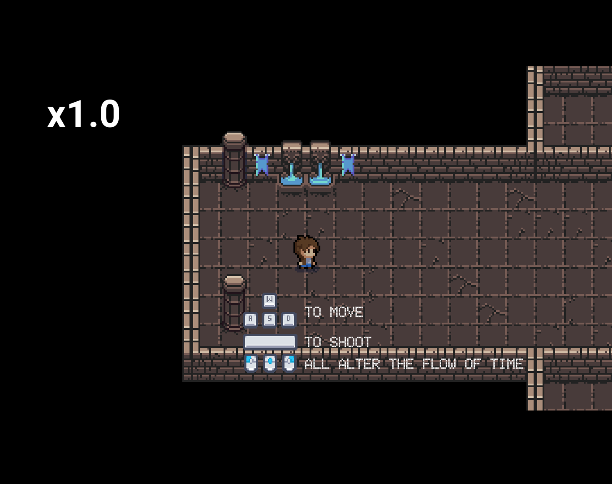

AVERT
RIT First Year, Spring Semester
This is a puzzle game that uses a grid and you have to place a bunch of shapes on the grid to make a laser bounce and hit the target. This was made using MonoGame in Visual Studio. I teamed up with 3 other students to make this, and my role in this project was the lead programmer. As such, I had to develop a lot of the functionality of the game. The main thing that I learned from this project was how to work with other people to make a game, since was my very first group project. There were a lot of challenges thrown at us during the making of this game. One of our bigger ones was figuring out how to make the levels work. I decided to create an external tool that helped with making the levels and we programmed the levels from there. Download and play it here.


Fort Turtle
RIT Second Year, Fall Semester
This is less of a game and more of a demonstration of my 3D modeling skills. I created this scene with 2 other people and we created different parts of the scene. I created the turtle statue and trees, and I put the scene together by assembling the fort and using fog and snow to create the atmosphere. The only real challenges presented to us was learning how to use Maya to make the models and use Unity to put the scene together, since we were new to it at the time. Download and check it out here.

GIPHY Finder
RIT Second Year, Fall Semester
This is a web service designed for users to be able to find GIFs that they are looking for and do basic functions like copying their links and adding them to favorites. This was developed using HTML, CSS, a lot of JavaScript, and the GIPHY API. I designed and developed this site myself. During the making of this project, I learned how loading in assets from a search API works, and how I can use that to enhance the user experience on the site. One of the biggest challenges that I faced with making this site is figuring out how to get all of the functions to work. Learning how to make the search function work was challenging on its own, but getting all of the other features to work alongside it was even more challenging. But one by one, I figured out how to make each function work and now the site is entirely functional. Check it out here.

Space Invaders: The Bizarro Dimension
RIT Second Year, Fall Semester
This game is similar to the classic Space Invaders, but there are a lot of twists thrown into this game that makes it unique in its own way. This game was made using JavaScript and the external libraries PixiJS, Howler, and Google WebFonts. I designed and developed this game by myself. I learned a lot of things about Javascript as I was making this game, and now I know how I can use it to make games. I think one of the biggest challenges with this project was getting everything to work properly. Making a big game like this leaves room for a lot of bugs, and I had to playtest a lot in order to get rid of as many of them as possible. In the end, I am very proud of this silly little game that I made and I had a lot of fun making it. Click this link to play it.


Talisman of Ethshar
RIT Third Year, Fall Semester
This is a puzzle game set around the world of Ethshar from the open-ended series of fantasy stories by Lawrence Watt-Evans. This game is about connecting dots in specific patterns to create talismans, and was made in Unity. As I was in a team of 5, my primary role in this project was creating the overall look of the game, including the special effects that appear when the player wins. I mainly learned how to import assets into a Unity project and use them effectively. Click this link to play it.

Breath of the Wild Hyrule Compendium
RIT Third Year, Spring Semester
This is a comprehensive web service designed for users to access any and all items and entities that are located in The Legend of Zelda: Breath of the Wild. This was developed using HTML, CSS, a lot of JavaScript, and an API of the Hyrule Compendium in the game. I designed and developed this site myself. During the making of this project, I learned how to use web components in multiple pages, use Bulma CSS, and use Google Firebase to allow users to upload some of their favorite items to a server. I faced a lot of challenges during the making of this site. I had to learn how to use Bulma to set the layout of my site and design it so that it's readable on all screen sizes. I also had to figure out how to incorporate Google Firebase into my site. However, I overcame these challenges and I am particularly proud of this site. Check it out here.

Vitamin Deficiency
RIT Third Year, Spring Semester
This is a rougelike where you play as a farmer and you fight against vegetable monsters. This game was made using C# in Unity. I teamed up with 3 other people for this project, and I designed and animated all of the enemies and bosses. I also programmed different AI and attack patterns for each enemy. As such, I learned how to use the Unity animator in depth and how to use abstract and virtual methods to create different enemies. Click this link to download and play it.

Pursuit ~ Visualizer
RIT Third Year, Spring Semester
This was one of the last projects that I worked on at RIT before I transferred, and this is easily one of my favorite projects from that school. This is a web application that allows the user to listen to music and interact with on-screen effects that move along with the music. I chose to theme this application after Ace Attorney because I was a huge fan of it at the time and its music is phenomenal. I used everything that I've learned from developing the Breath of the Wild Hyrule Compendium and I cranked the style of this application up to 11, making the aesthetics extremely faithful to the source material it was based on. I did face some new challenges with this project too, such as how to create multiple channels of audio to play multiple sounds at once and how to make this application fully functional with all screen sizes. Check it out here.


 
